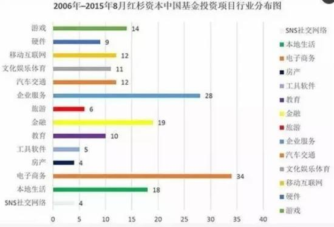
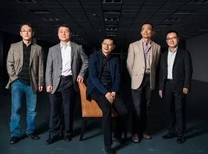

导读：对于挑选潜在的成功创业者，沈南鹏有极其独到的眼光，和一套完善的评判标准。他曾经在一次演讲中强调了“职业精神”的内涵，对打造成功企业的重要意义。可以看到，这是他投资决策的重要依据之一。
美国红杉的理念是专注于买“赛道”，但沈南鹏把中国互联网的大半个场子全“买下来了”。数据显示，红杉中国的基金总额仅300亿人民币，但投资组合中已上市公司的总市值，已达2.6万亿。
投资一家企业时，企业的一把手、团队和商业模式，沈南鹏认为：判断创业者时不仅要看能力、技巧，还要看他是否具备正能量。也就是说投资最重要的是人，精神比能力更重要。
沈南鹏的传奇人生
沈南鹏：红杉资本全球执行合伙人；携程旅行网和如家连锁酒店的创始人；“福布斯2012-2016年度全球最佳投资人”榜单中排名第一的华人投资者；北京股权投资协会副会长；上海浙江商会常务副会长......
沈南鹏传奇的经历还有很多很多。
学习生涯：1985年，成为上海交通大学首届（85级）免试直升的试点班学生。1989年，获得上海交通大学学士学位，并到美国学习，先在哥伦比亚大学数学系，后报考了耶鲁大学的商学院，1992年在耶鲁取得硕士学位。
海外经历：耶鲁大学硕士毕业后，进入花旗银行美国工作。1994年，回国加入雷曼兄弟亚洲公司，负责中国的投资银行项目。1996年至1999年，任德意志银行的董事兼中国资本市场主管，负责中国的债务资本市场。
国内创业：1999年，创立携程旅行网，任董事长，同时，担任公司总裁及首席财务官职位。2003年12月9日，率领携程旅行网在纳斯达克上市。
2002年，沈南鹏创立如家连锁酒店，担任创始人及联席董事长。2006年10月26日，带领如家连锁酒店在纳斯达克上市。2003和2004年，沈南鹏以个人身份成为易居中国和分众传媒的天使投资人和董事。
风险投资：在金融危机的新环境下，2009年沈南鹏领导的红杉资本在科技和传统领域选择有高速增长潜力的公司进行投资，同时带领旗下多家投资企业分别在纽交所、香港主板和国内A股成功上市。
同时，促成新浪房产频道和易居中国合并，使易居中国于2007年8月8日在纽约证券交易所上市。2009年12月，沈南鹏领导的红杉资本帮助曹国伟为首的管理层完成了中国第一门户新浪网的控股收购 。
沈南鹏对投资的看法
近日，2016年诺亚财富第六届私募股权高峰论坛在上海举行，论坛现场，红杉资本全球执行合伙人、红杉资本中国基金创始及执行合伙人、诺亚财富股东沈南鹏分享自己对投资的看法。
风口与机遇：风口也就是机遇，看准风口，把握机遇。做投资，是看长期趋势和未来，不是短期热点。有些风口可以产生长期的价值，适合投资，有些却不会。这就需要静下心来做大量分析。
投资，并不是要去人多的地方：人多的地方就是好的吗？投资，并不是要去人多的地方，相反，人云亦云很容易出问题。
过去几年，电子商务和O2O是行业投资热点，在上千家公司里，真正能给投资基金带来巨大回报的公司并不多，电子商务可能不到10家，O2O也差不多。当很多投资人都关注某个行业、钱不断涌入的时候，创业者之间的竞争加剧，就难以静下心来认真打造产品了。
差异化投资：红杉资本其中一类投资是把海外优秀的产品和服务引入到中国来，在中国落地。这件事情比很多早期投资复杂的多。这个过程越复杂、竞争就越少，也没有同质化问题。

当你的投资过程中每个环节都是非常复杂的时候，差异化就形成了。到今天为止，红杉的成功案例，无一不是投前投后都花费了大量的时间和精力。
形成自己独特的观点：想要有自己独特的观点，就必须有理性的分析和研究。无论是100万美元，还是1个亿，每个投资背后的工作都是一样的，都必须建立在对行业有深入、全方位的研究之上，必须落实到大量数据和事实的调研之上。
最大的挑战是不同的行业，有不同的研究方法，每一个新的行业，就可能需要新的方法论。
如何判断一个企业家：最后，无论是风口也好，长期趋势也好，在投资中，找到龙头企业和龙头企业家，至关重要。判断企业家的能力和潜力没有捷径，最重要的是花足够的时间和企业家接触，了解和结成朋友。
沈南鹏认为，创业家精神比能力重要
从亲手操盘运作携程、如家的上市成功，到慧眼识英雄，挖掘京东、美团、大众点评、聚美优品等一系列为人熟知的互联网企业，没有对互联网、对企业家精神极其深刻的理解，完全不可能从如此众多的创业者之中，挑选出这么多具备强大领导力的成功者。
沈南鹏认为，创业家精神很重要，但是很多人忽略了“职业精神”的重要性。沈南鹏认为职业精神体现在5个方面：
1、专业的知识和能力：管理者、领导者必须在行业里面成为专家，对于一位有志成为管理者、领导者的人来讲，知识应该是多方面的。当走到一个中高层管理位置的时候，可能也要了解财务，这就需要参加一些像EMBA、FMBA这样的课程，提升自己的管理、领导力。
2、团队精神：团队之间建立信任、尊重以及体谅。这在团队精神训练中，是非常重要的。而体谅这个词非常重要，尽管它放在最后。当你的同事因为种种原因没能达到大家期望值时，你要给他一些理解，同时给他尊重和鼓励，能够让他把落后的地方补起来。
3、价值观：善待家人、善待同事，这是价值观当中非常重要的一点。你对待客户、合作伙伴的态度是怎样的？你对周围的朋友、家人是怎样的？如果过度营销或欺骗客户，尽管可能在短期内能够达到某些目标，但这些最终都会损害公司和你自己。
4、责任心：每个人对自己所从事的工作，每个细小的工作，都要有最佳完成任务的责任心。一些看起来很细小的问题，用心去做，效果就会大大不同。做为一家投资银行的专业人士，必须把最好的内容和形式呈现给客户，这是职业精神的一部分。

5、解决问题的能力：在巨大的时间压力下创造性地解决问题。商业社会中的很多问题必须要想出创造性的方法解决问题，因为没有现成的答案，这是考验一个人的专业能力。并且解决问题往往是在巨大的时间压力下完成的，这是商业社会中经常碰到的。
在红杉，接待来访的创业者时，我们希望做到在跟每位创业者交流的那段时间里，不接打电话，不看微信，不管来访的是“大”公司还是“小”公司。
这个细节虽然很小，但表现出的却是对创业者的尊重。既然是会议，就必须集中精力地与创业者探讨，因为他是全身心投入的，而且可能准备了好几天来和我们讨论。这样的职业态度恰恰展示出一个公司的风貌和文化，是非常重要的。
从2006年到2014年的8年多时间里，红杉中国共涉足了14个行业的投资，累计投资200多个项目。“从今天向后看20年，如果中国的500强企业中，能有那么10家、20家行业指标型公司是红杉投资的，那就是我们最大的成功。”沈南鹏如是说。
- 推荐图文
- 推荐人物
- 推荐企业